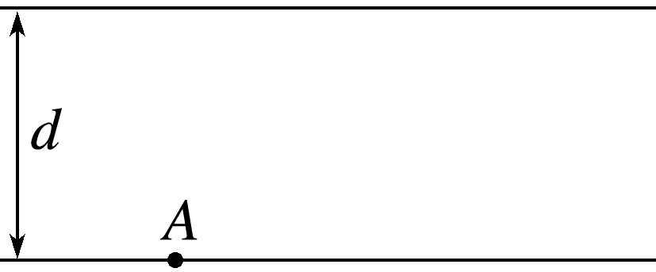
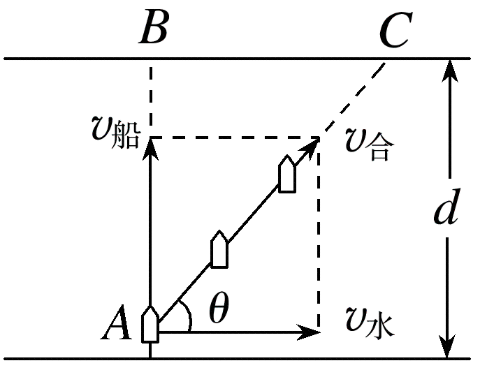
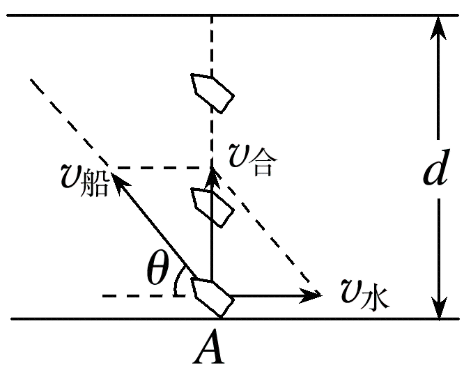
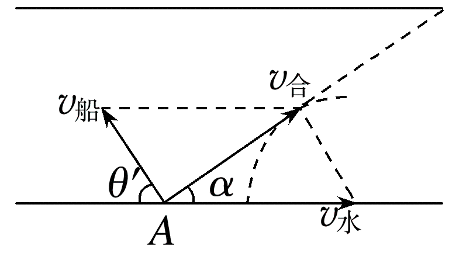

考点07 · 小船渡河问题
如图所示为一条宽为 d 的大河，小明驾着小船从 A 点出发，欲将一批货物运送到对岸。已知河水流速为 v水，小船在静水中的航速为 v船。

船的实际运动是水流的运动和船相对静水的运动的合运动。
三个速度：
由于水流速度始终沿河岸方向，不能提供指向河岸的分速度，因此过河时间由河的宽度除以垂直于河岸方向的速度得到。
若要渡河时间最短，只要使船头垂直于河岸航行即可。
此时小船还会被河水冲向下游，下游漂移距离：
实际渡河位移大小与方向：

最短位移为河宽 d，此时合速度垂直河岸，小船可到达正对岸。
船头与上游河岸夹角 θ 满足：
渡河所用时间：

以 v水 矢量的末端为圆心，以 v船 的大小为半径作圆，当合速度方向与圆相切时，合速度方向与河岸的夹角最大（设为 α），此时航程最短，小船不能到达正对岸。
由几何关系：
最短位移：
